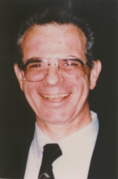

Please note: the AAS Obituaries are temporarily being hosted on this website while their full content is being ingested into the PubPub publishing platform newly adopted by the Bulletin of the American Astronomical Society. When the migration is complete, your existing links will take you to the final, migrated content. Contact peter.williams@aas.org with any questions.
William Stephen Mesrobian (1943-1998)
On 10 December 1998, William Mesrobian passed away at the age of 55 in Framington, Massachusetts. Born in Syracuse, New York he received his undergraduate degree from Syracuse University and a master's degree in astronomy from Wesleyan University, with a thesis entitled "A Study of the Astrometric Binary System Ross 614AB." This and most of his other publications, including eight lists of stellar parallaxes, appeared in the Astronomical Journal.
Following receipt of his MS, Mesrobian was a Daniel Fellow at the Allegheny Observatory of the University of Pennsylvania, and a guest astronomer at the Byurakan Observatory at the invitation of its director Academician Viktor A. Ambartsumyan. He always regarded this time in Armenia as one of the highlights of his career. From 1970 to 1974, Mesrobian returned to Wesleyan University as a research associate at Van Vleck Observatory, after which he moved into advanced technology, specializing in local area network administration.
Throughout his life, Bill worked tirelessly for the Armenian cause, being involved with the Armenian Assembly of America from its inception and playing a leading role in the Armenian National Committee of America for the last 15 years of his life. He once wrote: "I hold a deep sense of injustice about what the Armenian people have experienced, and I'm outraged that such a crime not only goes unpunished but also is being strongly denied by people who have something to gain by that denial." He was also a member of the Armenian Revolutionary Federation and served as a teacher, mentor, and friend to hundreds of political activists.
Mesrobian is survived by his wife, Margaret Asalian, a daughter, Ani, a son, Berj, his parents, William J. and Arpena, his sister, Marian MacCurdy, a nephew and niece Robert and Meline McCurdy, an aunt Stella Rustigian, an uncle Col. Harry Sachaklian, and three cousins.
Photo courtesy of Arpena S. Mesrobian
Obituary written by: George Aghjayan (Armenian National Committee of Central Massachusetts)
BAAS Citation: BAAS, 2000, 32, 1680
SAO/NASA ADS Bibcode: 2000BAAS...32.1680A